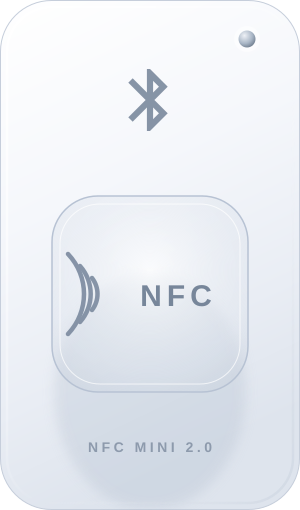

设备外观
未连接
BLE 5.0 · 13.56 MHz SN —
按住设备左右拖动可手动旋转；指示灯随连接与读写状态联动。
连接方式
就绪- 点击「一键扫描设备」开始搜索附近的读卡器
- 点击「枚举串口」列出本机 USB 串口设备
USB 模式会自动排除蓝牙虚拟串口；若列表为空，请先安装 CH340 / CP210x 驱动。
USB 直连（厂商通道）
未连接- 点「发现有线设备」枚举本机 USB（厂商自定义类 + Bulk 端点）
有线通道走厂商自定义接口的 Bulk 端点（本机实测：OUT 0x01 / IN 0x81，64 字节）。默认帧是本项目协议的 INFO 帧；本机实测该设备与 6 字节私有帧均暂无应答，这里会如实显示「帧已发出、无应答」，不会假装成功。
设备信息
未连接蓝牙连接前，请先让读卡器与手机微信断开。
寻卡
自动破解（后台级联）
待寻卡寻卡成功后自动在后台按顺序尝试多种破解方式，前一种失败自动切换下一种，不阻塞读卡。
破解结果会显示在这里。
扇区数据
未读取独立写卡
待写卡命令对齐微信小程序「宜新 NFC Reader Tool」：写卡号 0x0C、极速写块 0x16、普通写块 0x18、带密钥类型写块 0x08；写前先用 0x24 / 0x26 做卡号校验。
写卡结果（含卡号校验结论、每一步命令与耗时）会显示在这里。
读 ID 卡 / 低频卡频率
未读取对应小程序 0x26 命令：读取 ID 卡（低频卡）卡号，并解析其工作频率档位（125 / 250 / 375 / 500 kHz）。
写录手机 / 手环 NFC
待写录命令语义对齐小程序 card-write 页的「写手机 / 手环」：转接卡两步法 —— 0x0C 写卡号 → 0x26 回读 → 0x27 生成转接卡 → 0x16 / 0x18 写 IC 数据。 该流程与「写 UID / 魔术卡」（0x27 直接改写卡片 UID）、「封卡」（0x17 单字节，不可逆）是 不同流程，请勿混用。
转接卡步骤清单与回读结论（含 0x27 是否命中桥卡）会显示在这里。
破解方式（自动级联）
0 / 6执行
就绪破解结果将显示在这里。
破解时请保持卡片贴在读卡器上。硬嵌套耗时较长，可随时中止。
自动识别卡片 / 一键破解扫描
待扫描先发 0x38 自动识别卡片（单字节 DATA）读回卡号 / 卡类型 / 卡代码 / 设施码； 0x38 未命中或返回非 ID 卡时自动回落 0x11 寻卡判类型，再按卡类型决定是否启动后台级联破解 （ID 卡无密钥概念 → 跳过）。注意：staticnested 变体破解同为 0x38 但带载荷， 自动识别是单字节，设备靠 DATA 长度区分。
识别结论、卡号校验状态与破解建议会显示在这里。
卡夹
0 张「复制」= 读取当前卡的 64 个数据块并存入卡夹（同时后台自动破解）；「粘贴写卡」= 把卡夹中的数据逐块写回目标卡并回读校验。
背景外观
读写与破解默认值
关于
NFC Mini Studio 2.2.0
协议来自 NFC Mini 2.0 微信小程序 BLE 私有协议逆向，仅供自有设备研究使用。
破解模式（云端解算 / 本地离线）
读取中…云端解算失败或超时后自动降级本地 mfkey32。
token 来源：微信小程序「宜新 NFC Reader Tool」登录账号后，请求头 NICETHEME 的值（登录态、会过期，需自行获取粘贴）。密钥库接口用的厂商内置凭据已随软件内置，无需填写；未填 token 时云端会跳过并自动降级本地 mfkey32。
点「验证本地算法」跑一遍官方 mfkey32 测试向量，确认本机离线算法可用。
密码库
读取中…公共资源库＝厂商常用密钥表；用户密钥库＝自己新增/导入；读卡历史库＝每次读卡破解命中的 UID 与密钥。
常见问题
FAQ云端破解为什么有时候解不出来？
云端密钥库（keygen）是按卡号 UID 收录的。收录过的卡会返回几百把候选密钥，逐把验证很快就能命中；没收录的卡查不到候选，就需要用 staticnest / hardnested 等需要已知密钥的算法。
为什么读卡慢、写卡快？
读卡要逐块采集 + 云端返回几百把候选逐把验证（官方也是分批试），所以慢；写卡用的是 0x16 极速档，写完立即返回，所以快。
云端 token 会过期吗？
会。recovery 接口要的是微信登录态 token，约 1 天过期。破解页点「从微信小程序自动获取 token」可一键重新抓取填好；不填时云端会跳过、降级本地算法。
写卡提示里的「滚动码」是什么？
有些小区卡每次刷卡会改掉某一两个块（滚动码）。直接克隆可能导致门禁失效。用卡夹页的「数据对比」可以看出是不是滚动码卡。
格式化 / 封卡会不会有风险？
都会，且不可逆。格式化会清空整卡数据（密钥块写回厂商默认值）；封卡（0x17）/ 锁卡（0x23）执行后卡片不能再改写。两者都要勾选「我已知晓」并二次确认。
为什么写卡总是失败？
先确认密钥已通过认证（0x06/0x09，不是那个空命令 0x0A）。密钥错时写块必然失败。可用密码库的「批量验证」先筛出正确密钥，再写卡。
固件升级为什么只让下载不让刷？
刷写固件有变砖风险，且官方刷写协议（0x90/0x91）尚未完全逆清。当前只提供「检查固件」和「下载固件」留档，不做刷写。
HID 卡 / ID 卡能破解吗？
不能，也不需要。ID 卡（125kHz）和 HID 卡是低频卡，没有 Mifare 的扇区密钥体系，寻卡即可读出卡号，不存在"破解密钥"这回事。